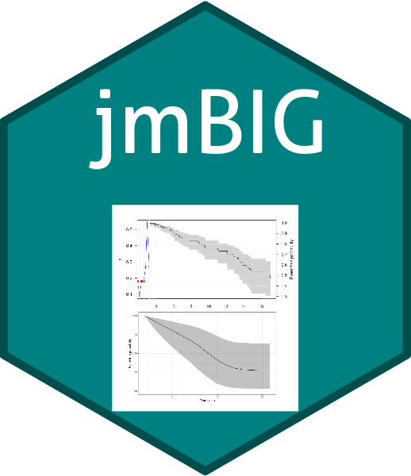

jmBIGis an R package that provides a flexible, modular framework for joint modeling of longitudinal and time-to-event data, specifically optimized for large datasets commonly found in real-world clinical and biomedical studies.
✨ Features
- 🧠 Joint modeling of longitudinal biomarkers and survival outcomes
- ⚡ Big data readiness: designed for efficiency on large sample sizes
- 🔁 Compatible with:
-
JMbayes2(Bayesian joint modeling) -
FastJM(Frequentist joint modeling) -
rstanarm(Bayesian GLMMs) -
joineRML(MLE-based methods)
-
- 🧾 Posterior prediction of:
- Individual survival probabilities
- Longitudinal trajectories
- 📊 Tools for:
- Dynamic predictions
- Bootstrapped confidence intervals
- Visual summaries
📦 Installation
From GitHub (development version)
# If not already installed
install.packages("remotes")
# Install jmBIG from GitHub
remotes::install_github("kumarbhrigu/jmBIG")